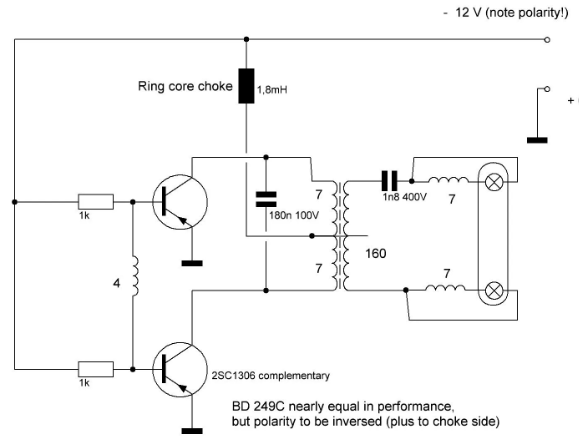
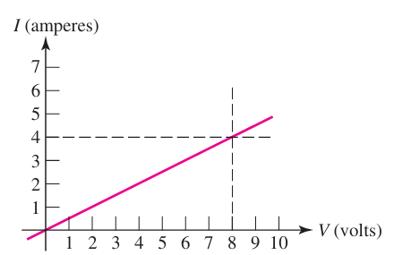

Voltage , Current#
Current is the rate at which charge flows through a circuit, measured in amperes (amps) and denoted by “I”. It is defined as \( I = \frac{\Delta Q}{\Delta t} \), where \( \Delta Q \) is the change in charge and \( \Delta t \) is the change in time.
Charge conservation means that while charges move, they are neither created nor destroyed. But in radar system is denied
Current has both magnitude and direction. Although historically associated with positive charge movement, it is now understood to result from negative charge motion. One ampere equals one coulomb per second.
Total charge transferred over time is given by \( q(t) = \int_{t0}^{t} i \, dt + q(t0) \).
The relationship between current in antenna circuits and charge conservation can be summarized as follows:
Charge Conservation:
Principle: In general electrical systems, charge conservation means that charge is neither created nor destroyed; it is only redistributed. The total amount of charge remains constant over time.
Voltage Voltage in a circuit is defined as the potential difference between two terminals of a circuit element. This potential difference represents the work required to move charge through the element and is measured in volts (V), where 1 volt equals 1 joule per coulomb.
Power Power (\(p\)) is defined as the rate of energy transfer, measured in watts (W). It is calculated as the product of voltage (\(v\)) and current (\(i\)), expressed by \(p = vi\). This relationship ensures that power is dimensionally equivalent to joules per second. The power absorbed by a circuit element depends on both the current flowing through it and the voltage across it. The direction of the current is crucial for determining energy transfer, and examples of power calculations are based on specifying the current direction.
from ENGINEERING CIRCUITANALYSIS, EIGHTH EDITION , William H. Hayt, and et. al.
In above Fig. a, with +3 A flowing into the positive terminal, the absorbed power is \( P = (2V)(3A) = 6W \). In Fig. b, with -3 A flowing into the positive terminal, the absorbed power is \( P = (-2V)(-3A) = 6W \). In Fig. c, with -5 A flowing into the positive terminal and a voltage of 6V, the absorbed power is \( P = (6V)(-5A) = -20W \), indicating the element is supplying +20W of power.
Independent voltage sources#
In defining circuit elements, it’s crucial to distinguish between the physical device and its mathematical model, with the latter being an approximation. For simplicity, we use idealized models where elements are classified based on their voltage-current relationships: resistors, inductors, capacitors, independent sources, and dependent sources.
Independent voltage sources, characterized by a constant voltage regardless of current, are idealized components that approximate real devices like batteries. The symbol for an independent voltage source :
Homework : obtaining characteristic of Independent voltage sources using Pyspice#
Jupyter notebook must be include:
about Independent voltage sources (text and figure 0.5 page)
code and analysis
Miniproject: The explanation about independent current sources is similar to that of independent voltage sources.#
Dependent sources#
Dependent sources are controlled by other circuit variables, unlike independent sources whose values are fixed. These sources are crucial in modeling electronic devices like transistors and operational amplifiers. They are represented using diamond symbols with scaling factors, and their control variables must be defined in the circuit. Despite initial oddity, such sources simplify complex system analysis, exemplified by a field-effect transistor’s drain current dependent on gate voltage.
Example: A Metal Oxide Semiconductor Field Effect Transistor (MOSFET) is a real component that we model using DS.
Constant and Variable Sources#
In the real world, finding a constant source is very difficult. For example, a battery’s voltage changes with the current that feeds the load. Figure 1 illustrates the most widely used battery model. It consists of an ideal battery with an open circuit voltage (OCV) \( V_0 \), a constant equivalent internal resistance \( R_{\text{int}} \), and \( v(t) \) as the terminal voltage.
Battery Model Formulas#
Open Circuit Voltage (OCV):
This is the voltage of the battery when no load is connected, meaning the circuit is open.
Terminal Voltage: The terminal voltage \( v(t) \) can be expressed as:
where \( I(t) \) is the current at time \( t \).
Load Current: The load current \( I(t) \) is related to the load resistance \( R_{\text{load}} \) and the terminal voltage \( v(t) \):
Determining \( R_{\text{int}} \): To determine the internal resistance \( R_{\text{int}} \), you can connect a load and measure both the terminal voltage and the current. Using Ohm’s Law:
Example Calculation#
Measure the Open Circuit Voltage: $\( V_0 = \text{OCV} \)$
Connect a Load and Measure Terminal Voltage and Current:
Calculate Internal Resistance:
By adjusting the load resistance \( R_{\text{load}} \), the user can change the load current \( I(t) \), which in turn changes the terminal voltage \( v(t) \). These formulas provide a mathematical representation of the battery model, demonstrating how the terminal voltage changes with the load current due to the internal resistance.
Homework: Battery Model#
Draw a suitable battery model with a valid load using Schemdraw.
Use PySpice to sweep the load and plot the output voltage of the battery.
Guide:
Current source#
An ideal current source, known as a “constant current source,” provides a constant, steady-state current regardless of the load connected to it, resulting in an I-V characteristic represented by a straight line.
Also see Cuurentsource
Current source using a transistor#
The following circuit illustrates a simple, one-transistor current source circuit.
Due to the base-emitter voltage drop of the NPN transistor, the emitter voltage is about 0.7 volts below the base voltage (Vb). The emitter current, Ie, equals Ve/R. The collector current will be constant, approximately equal to Ie, regardless of the voltage on the collector. Overall, it will be roughly one percent lower due to the slight current drawn through the base.
Of course, Vb is fed using a Zener diode. The load is connected to the collector and sees a high internal resistance, which is characteristic of an ideal current source. The current is determined by the emitter and the resistance installed in the emitter, making the load current approximately independent of the load.
Miniproject : Precision 6-20 mA Source for Industrial Process Measurement#
shematics using Schemdraw
Analysis using Pyspice
Direct and Variable Sources#
Examples of direct sources include battery voltage and electronic-based current sources. However, variable voltage sources, like the alternating current used in our cities, are different. Another variable source can be constructed using electronic components, as shown in the following schematic.
import schemdraw
import schemdraw.elements as elm
with schemdraw.Drawing() as d:
V1 = elm.SourceV().label('5V')
elm.Line().right(d.unit*.75)
S1 = elm.SwitchSpdt2(action='close').up().anchor('b').label('$t=0$', loc='rgt')
elm.Line().right(d.unit*.75).at(S1.c)
elm.Resistor().down().label(r'$100\Omega$').label(['+','$v_o$','-'], loc='bot')
elm.Line().to(V1.start)
elm.Capacitor().at(S1.a).toy(V1.start).label(r'1$\mu$F').dot()
---------------------------------------------------------------------------
ModuleNotFoundError Traceback (most recent call last)
Cell In[1], line 1
----> 1 import schemdraw
2 import schemdraw.elements as elm
3 with schemdraw.Drawing() as d:
ModuleNotFoundError: No module named 'schemdraw'
import schemdraw
import schemdraw.elements as elm
with schemdraw.Drawing() as d:
V1 = elm.SourceV().label('5V')
elm.Line().right(d.unit*.75)
S1 = elm.SwitchSpdt2(action='close').up().anchor('b').label('$t=0$', loc='rgt')
elm.Line().right(d.unit*.75).at(S1.c)
elm.Resistor().down().label(r'$100\Omega$').label(['+','$v_o$','-'], loc='bot')
elm.Line().to(V1.start)
elm.Capacitor().at(S1.a).toy(V1.start).label(r'1$\mu$F').dot()
{kind=link}
FPL Driver#
For instance, a fluorescent lamp (such as FPL) driver operates at approximately 300 volts, similar to the circuit shown below.

Ohm Law#
The concept of Ohm’s Law originates from Georg Simon Ohm’s 1827 publication, which mathematically related voltage and current in a linear resistor. Ohm’s Law states that the voltage (v) across a conductor is directly proportional to the current (i) through it, expressed as \( v = Ri \), where R is the resistance. This relationship is graphically represented as a straight line through the origin. Though idealized, linear resistors approximate real devices within specific ranges of current, voltage, and environmental conditions. Nonlinear resistors, while complicating analysis, are beneficial in applications like overcurrent protection and voltage regulation.
Circuit Equation:
where:
\( v \) is the voltage across the resistor,
\( i \) is the current through the resistor,
\( R \) is the resistance.

Power dissipation of resistance#
The power \( p \) dissipated by a resistor is given by the formula \( p = vi \), where \( v \) is the voltage across the resistor and \( i \) is the current through it.
Ohm’s Law: According to Ohm’s Law, \( v = iR \), where \( R \) is the resistance. Substituting \( v = iR \) into the power formula:
Alternative Form: Similarly, you can express the power in terms of the voltage \( v \) as follows:
Average Power Over Time: If you are considering the average power over a period \( T \), you would integrate over time and then average:
For a resistor, this would be:
This can be simplified if you know the voltage and current waveforms, or if they are constant.
Homework: Average Power#
Generate the current according to the following figure in PySpice.
Provide a Jupyter notebook that includes the mathematics for calculating average power.
Node:#
Apoint at which two or more elements have a common connection is called a node.
Loop#
If the node at which we started is the same as the node on which we ended, then the path is, by definition, a closed path or a loop.
KIRCHHOFF’S CURRENT LAW (KCL)#
The algebraic sum of the currents entering any node is zero.
The equation \( i_A + i_B - i_C - i_D = 0 \) represents a Kirchhoff’s Current Law (KCL) equation, which states that the sum of currents entering a node (or junction) in an electrical circuit ( following figure) must be equal to the sum of currents leaving that node.
\( i_A \) and \( i_B \) are currents entering the node.
\( -i_C \) and \( -i_D \) are currents leaving the node.
KIRCHHOFF’S VOLTAGE LAW (KVL)#
The algebraic sum of the voltages around any closed path is zero.
The equation \( -v_1 + v_2 - v_3 = 0 \) represents a Kirchhoff’s Voltage Law (KVL) equation, which states that the sum of all voltages around a closed loop or mesh in a circuit must equal zero.
Problem Solving in Classroom 1#
Find the current and voltage across the selected resistor.
import schemdraw
import schemdraw.elements as elm
with schemdraw.Drawing() as d:
d.config(fontsize=12)
R1 = elm.Resistor().label('1Ω').idot().label('a', 'left')
R2 = elm.Resistor().label('2Ω').idot().label('c','right')
R3 = elm.Resistor().down().label('1Ω', loc='bottom')
R6 = elm.Resistor().left().label('1Ω')
R5 = elm.Resistor().label('1Ω', loc='bottom').dot().label('b', 'left')
R6 = elm.Resistor().endpoints(R1.end, R5.start).label('2Ω')
R7 = (elm.Resistor().endpoints(R2.end, R5.start)
.label('1Ω', loc='center', ofst=(-.3, -.1), halign='right', valign='bottom'))
V = elm.SourceV().reverse().label('2V').at(R1.start).down().length(3)
{kind=link}
Problem Solving in Classroom 2#
Find the current and voltage across the selected resistor.
import schemdraw
import schemdraw.elements as elm
with schemdraw.Drawing() as d:
d.config(fontsize=12)
# Define resistors
R1 = elm.Resistor().label('1Ω').idot().label('a', 'left')
R2 = elm.Resistor().label('2Ω').idot().label('c', 'right')
R3 = elm.Resistor().down().label('1Ω', loc='bottom')
R6 = elm.Resistor().left().label('1Ω')
R5 = elm.Resistor().label('1Ω', loc='bottom').dot().label('b', 'left')
R6 = elm.Resistor().endpoints(R1.end, R5.start).label('2Ω')
R7 = (elm.Resistor().endpoints(R2.end, R5.start)
.label('1Ω', loc='center', ofst=(-.3, -.1), halign='right', valign='bottom'))
# Define R8 with proper connections
wire1 = elm.Wire().at(R1.start).to((R1.start[0], R1.start[1] + 1))
wire2 = elm.Wire().at(R2.end).to((R2.end[0], R2.end[1] + 1))
R8 = elm.Resistor().endpoints(wire1.end, wire2.end).label('3Ω')
# Define the voltage source between points 'a' and 'b'
V = elm.SourceV().reverse().label('2V').at(R1.start).down().to(R5.start).length(1.5)
{kind=link}
Problem Solving in Classroom 3#
Find the voltage across the a, b points.
with schemdraw.Drawing() as d:
d.config(unit=2) # unit=2 makes elements have shorter than normal leads
d.push()
R1 = elm.Resistor().down().label('2Ω')
V1 = elm.SourceV().down().reverse().label('2V')
elm.Line().right(3).dot()
d.pop()
elm.Line().right(3).dot()
elm.SourceV().down().reverse().label('6V')
elm.Resistor().label('5Ω').dot()
elm.Line().right(3).dot()
elm.SourceI().up().label('3A')
elm.Resistor().label('1Ω').dot()
elm.Line().left(3).hold()
elm.Line().right(3).dot()
R6 = elm.Resistor().toy(V1.end).label('6Ω').dot()
elm.Line().left(3).hold()
elm.Resistor().right().at(R6.start).label('1Ω').dot(open=True).label('a', 'right')
elm.Line().right().at(R6.end).dot(open=True).label('b', 'right')
{kind=link}
Problem Solving in Classroom 4#
Find current \( I_1, I_2 \)
with schemdraw.Drawing() as d:
d.config(unit=5)
V1 = elm.SourceV().label('2V')
R1 = elm.Resistor().right().label('4Ω')
elm.Dot()
d.push()
R2 = elm.Resistor().down().label('1Ω', loc='bot', rotate=True)
elm.Dot()
d.pop()
L1 = elm.Line()
I1 = elm.SourceI().down().label('1A', loc='bot')
L2 = elm.Line().tox(V1.start)
elm.LoopCurrent([R1,R2,L2,V1], pad=1.25).label('$I_1$')
elm.LoopCurrent([R1,I1,L2,R2], pad=1.25).label('$I_2$') # Use R1 as top element for both so they get the same height
{kind=link}
Problem Solving in Classroom 5#
Find current \( i_g \)
with schemdraw.Drawing() as d:
I1 = elm.SourceI().label('5A').dot()
d.push()
elm.Resistor().right().label('3Ω').dot()
elm.Resistor().down().label('2Ω').dot().hold()
elm.Resistor().right().label('5Ω').dot()
V1 = elm.SourceV().down().reverse().label('5V', loc='bot')
elm.Line().tox(I1.start)
d.pop()
elm.Line().up(d.unit*.8)
L1 = elm.Resistor().tox(V1.start).label('3Ω')
elm.Line().down(d.unit*.8)
elm.CurrentLabel(top=False, ofst=.3).at(L1).label('$i_g$')
{kind=link}
Equivalent Circuit#
RESISTORS IN SERIES AND PARALLEL#
Thévenin and Norton Equivalent Circuits#
Thévenin and Norton equivalent circuits are techniques that simplify the analysis of linear circuits. Thévenin’s theorem allows replacing a complex circuit, except for a load resistor, with an equivalent circuit of a voltage source in series with a resistor. Norton’s theorem offers a parallel current source and resistor equivalent.
Homework : Thévenin and Norton Equivalent Circuits using Pyspice#
Draw circuits using Schemdraw
change circuit to complex form in following circuit
import PySpice.Logging.Logging as Logging
logger = Logging.setup_logging()
from PySpice.Spice.Netlist import Circuit
from PySpice.Unit import *
thevenin_circuit = Circuit('Thévenin Representation')
thevenin_circuit.V('input', 1, thevenin_circuit.gnd, 10@u_V)
thevenin_circuit.R('generator', 1, 'load', 10@u_Ω)
thevenin_circuit.R('load', 'load', thevenin_circuit.gnd, 1@u_kΩ)
simulator = thevenin_circuit.simulator(temperature=25, nominal_temperature=25)
analysis = simulator.operating_point()
load_node = analysis.load
print('Node {}: {:5.2f} V'.format(str(load_node), float(load_node)))
Node load: 9.90 V
C:\Users\Dr\AppData\Local\Temp\ipykernel_11192\2148456637.py:19: DeprecationWarning: Conversion of an array with ndim > 0 to a scalar is deprecated, and will error in future. Ensure you extract a single element from your array before performing this operation. (Deprecated NumPy 1.25.)
print('Node {}: {:5.2f} V'.format(str(load_node), float(load_node)))
norton_circuit = Circuit('Norton Representation')
norton_circuit.I('input', norton_circuit.gnd, 'load',
thevenin_circuit.Vinput.dc_value/thevenin_circuit.Rgenerator.resistance)
norton_circuit.R('generator', 'load', norton_circuit.gnd, thevenin_circuit.Rgenerator.resistance)
norton_circuit.R('load', 'load', norton_circuit.gnd, thevenin_circuit.Rload.resistance)
simulator = norton_circuit.simulator(temperature=25, nominal_temperature=25)
analysis = simulator.operating_point()
load_node = analysis.load
print('Node {}: {:5.2f} V'.format(str(load_node), float(load_node)))
Node load: 9.90 V
C:\Users\Dr\AppData\Local\Temp\ipykernel_11192\3550395943.py:12: DeprecationWarning: Conversion of an array with ndim > 0 to a scalar is deprecated, and will error in future. Ensure you extract a single element from your array before performing this operation. (Deprecated NumPy 1.25.)
print('Node {}: {:5.2f} V'.format(str(load_node), float(load_node)))
Problem Solving in Classroom 6#
Compute \( R_\text{equal} \) from input
with schemdraw.Drawing(show=False) as d1:
elm.Resistor().label('3Ω')
d1.push()
elm.Resistor().down().label('3Ω')
elm.Line().left()
d1.pop()
with schemdraw.Drawing() as d2:
for i in range(3):
elm.ElementDrawing(d1)
d2.push()
elm.Line().length(d2.unit/6)
elm.DotDotDot()
elm.ElementDrawing(d1)
d2.pop()
d2.here = (d2.here[0], d2.here[1]-d2.unit)
elm.Line().right().length(d2.unit/6)
elm.DotDotDot()
{kind=link}
Finalized Section#
Voltage Divider#
A voltage divider is a simple circuit used to reduce voltage by distributing it among two or more resistors. The voltage across each resistor in the divider is a fraction of the input voltage, determined by the resistances.
Equation:
For resistors \( R_1 \) and \( R_2 \) in series, the output voltage \( V_{out} \) across \( R_2 \) is:
where:
\( V_{in} \) is the input voltage,
\( R_1 \) and \( R_2 \) are the resistances.
Current Divider#
A current divider is used to distribute the input current among multiple parallel branches. The current through each branch is inversely proportional to its resistance.
Equation:
For resistors \( R_1 \) and \( R_2 \) in parallel, the current \( I_1 \) through \( R_1 \) is:
where:
\( I_{in} \) is the input current,
\( R_1 \) and \( R_2 \) are the resistances.
Maximum Power Transfer#
The maximum power transfer theorem states that to transfer the maximum amount of power from a source to a load, the load resistance should be equal to the source resistance.
Equation:
The power \( P \) transferred to the load \( R_L \) from a source with internal resistance \( R_S \) is maximized when \( R_L = R_S \).
Maximum Power:
where:
\( V_{source} \) is the voltage of the source,
\( R_S \) is the source resistance.
Superposition Theorem#
The superposition theorem states that in any linear circuit with multiple independent sources (voltage or current), the response (voltage or current) in any branch of the circuit is the algebraic sum of the responses caused by each independent source acting alone, with all other independent sources turned off (replaced by their internal resistances).
Steps to Apply Superposition Theorem:#
Turn Off All Independent Sources Except One:
Replace all independent voltage sources with short circuits (since an ideal voltage source has zero internal resistance).
Replace all independent current sources with open circuits (since an ideal current source has infinite internal resistance).
Solve the Circuit with Only One Source:
Analyze the circuit to find the current or voltage due to the single active source.
Repeat for Each Independent Source:
Repeat the above steps for each independent source in the circuit, one at a time.
Sum the Individual Responses:
Algebraically add all the individual responses (currents or voltages) from each source to get the total response in the circuit.
Example : Pyspice of Resistor Bridge#
import PySpice.Logging.Logging as Logging
logger = Logging.setup_logging()
from PySpice.Spice.Netlist import Circuit
from PySpice.Unit import *
circuit = Circuit('Resistor Bridge')
circuit.V('input', 1, circuit.gnd, 10@u_V)
circuit.R(1, 1, 2, 2@u_kΩ)
circuit.R(2, 1, 3, 1@u_kΩ)
circuit.R(3, 2, circuit.gnd, 1@u_kΩ)
circuit.R(4, 3, circuit.gnd, 2@u_kΩ)
circuit.R(5, 3, 2, 2@u_kΩ)
simulator = circuit.simulator(temperature=25, nominal_temperature=25)
analysis = simulator.operating_point()
for node in analysis.nodes.values():
print('Node {}: {:4.1f} V'.format(str(node), float(node))) # Fixme: format value + unit
Node 3: 6.0 V
Node 2: 4.0 V
Node 1: 10.0 V
C:\Users\Dr\AppData\Local\Temp\ipykernel_11192\1112048151.py:20: DeprecationWarning: Conversion of an array with ndim > 0 to a scalar is deprecated, and will error in future. Ensure you extract a single element from your array before performing this operation. (Deprecated NumPy 1.25.)
print('Node {}: {:4.1f} V'.format(str(node), float(node))) # Fixme: format value + unit